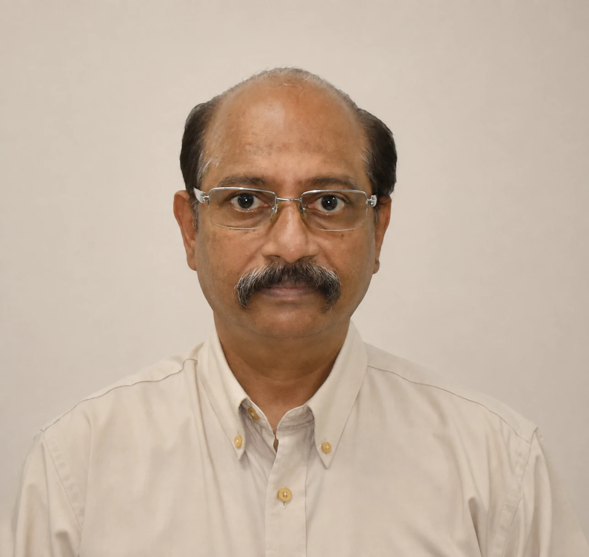

Versatile mechanical engineering professional with 36 years of progressive leadership across production, business development, operations, and Brazilian regulatory compliance.
Muthaiyan Shanmugam
Mechanical Engineer
View Profile for Muthaiyan Shanmugam
Versatile mechanical engineering professional with 36 years of progressive leadership across production, business development, operations, and Brazilian regulatory compliance.